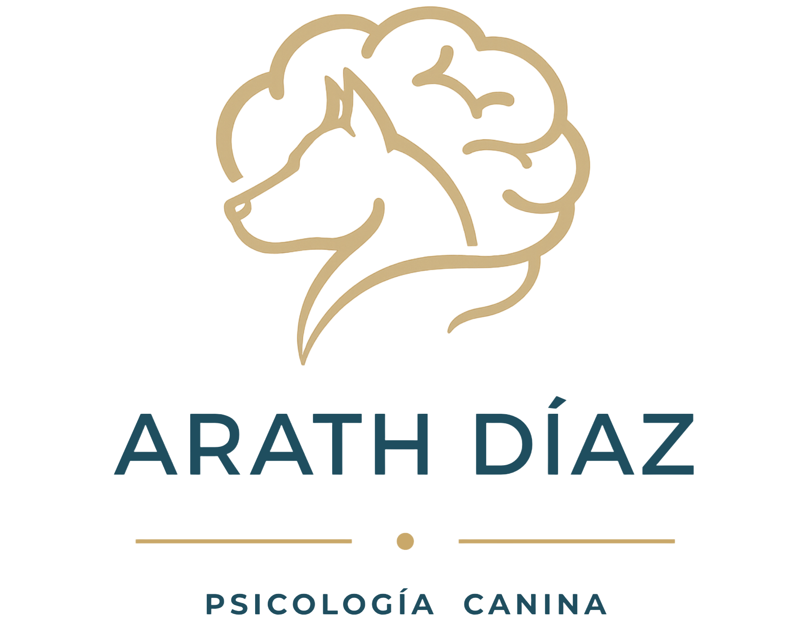

¿Y si el problema de tu perro no es de conducta, sino de comunicación?
Te ayudo a entender lo que necesita tu perro y cómo enseñarle mejor.
Paseo recreativo
Caminatas diseñadas para estimular física y mentalmente a tu perro.
Consultar ahora →
Paseo correctivo
Paseos enfocados en mejorar conductas y reforzar hábitos adecuados.
Consultar ahora →
Obediencia básica
Enseñanza de comandos esenciales para una convivencia equilibrada.
Consultar ahora →
Gestión de emociones con perros
Apoyo a personas en situaciones de estrés, ansiedad, miedos o dudas.
Consultar ahora →
Comunicación
Educación
Bienestar